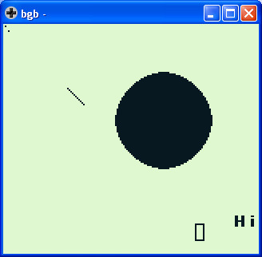

參考資訊：
https://bgb.bircd.org/
https://github.com/mrombout/gbdk_playground
http://gbdk.sourceforge.net/doc/html/book01.html
Drawing Functions
#define WHITE 0 #define LTGREY 1 #define DKGREY 2 #define BLACK 3 #define M_NOFILL 0 #define M_FILL 1 void gotogxy(UINT8 x, UINT8 y); INT8 gprintf(char *fmt,...) NONBANKED; void wrtchr(char chr); void plot_point(UINT8 x, UINT8 y); void line(UINT8 x1, UINT8 y1, UINT8 x2, UINT8 y2); void plot(UINT8 x, UINT8 y, UINT8 colour, UINT8 mode); void color(UINT8 forecolor, UINT8 backcolor, UINT8 mode); void circle(UINT8 x, UINT8 y, UINT8 radius, UINT8 style); void box(UINT8 x1, UINT8 y1, UINT8 x2, UINT8 y2, UINT8 style);
main.c
#include <gb/gb.h>
#include <gb/drawing.h>
void main(void)
{
color(BLACK, WHITE, SOLID);
plot_point(3, 4);
line(40, 40, 50, 50);
circle(100, 60, 30, M_FILL);
box(120, 125, 125, 135, M_NOFILL);
gotogxy(18, 15);
gprintf("Hi");
plot(1, 1, 3, SOLID);
}
需要注意的是，在All Points Addressable(APA)模式下，必須使用gprintf()取代printf()
完成
